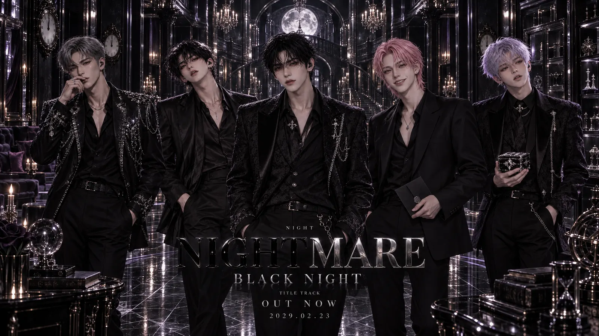

ALBUM
2029.02.23NIGHTMARE
탈출하려던 악몽의 끝에서 NIGHT 자신들이 악몽이었음을 마주하는 가장 어두운 장.
OFFICIAL ARCHIVE · 2029
NIGHTMARE
CONTROL · PLEASURE · NARCISSISM · DECEPTION · GREED. 다섯 속성과 BLACK NIGHT의 공식 기록.
LISTEN
도시의 심야에서 시작해 꿈과 현실의 경계까지. NIGHT가 지나온 앨범과 음악의 변화를 기록한다.
EXPLORE ERA ARCHIVE →탈출하려던 악몽의 끝에서 NIGHT 자신들이 악몽이었음을 마주하는 가장 어두운 장.
CONTROL · PLEASURE · NARCISSISM · DECEPTION · GREED. 다섯 속성과 BLACK NIGHT의 공식 기록.
LISTEN
DAY와 NIGHT, 두 얼굴로 이어지는 PERSONA의 콘셉트와 앨범, 뮤직비디오 스틸 및 무대 기록.
ANGEL과 FALLEN, 빛과 상흔 사이의 경계를 따라가는 WINGS의 공식 기록.